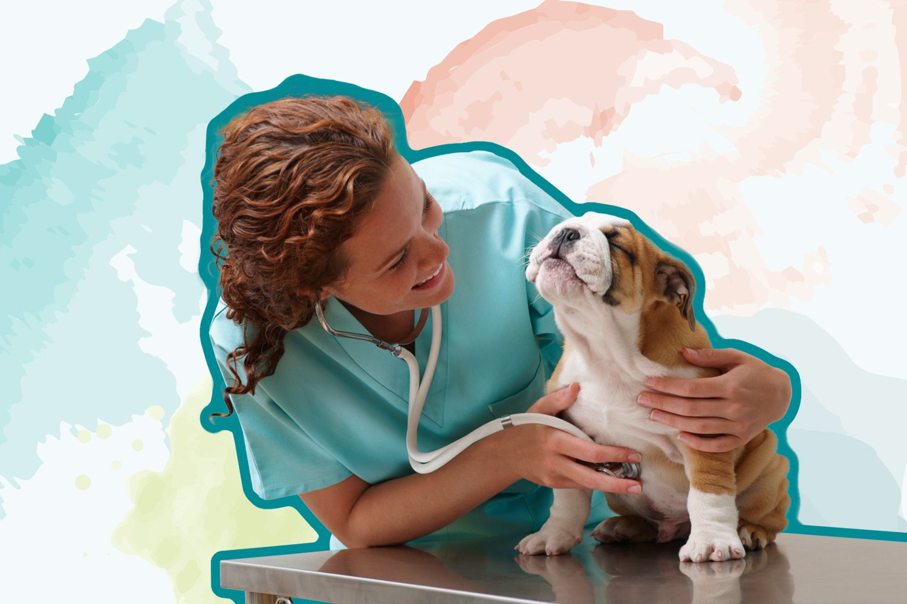
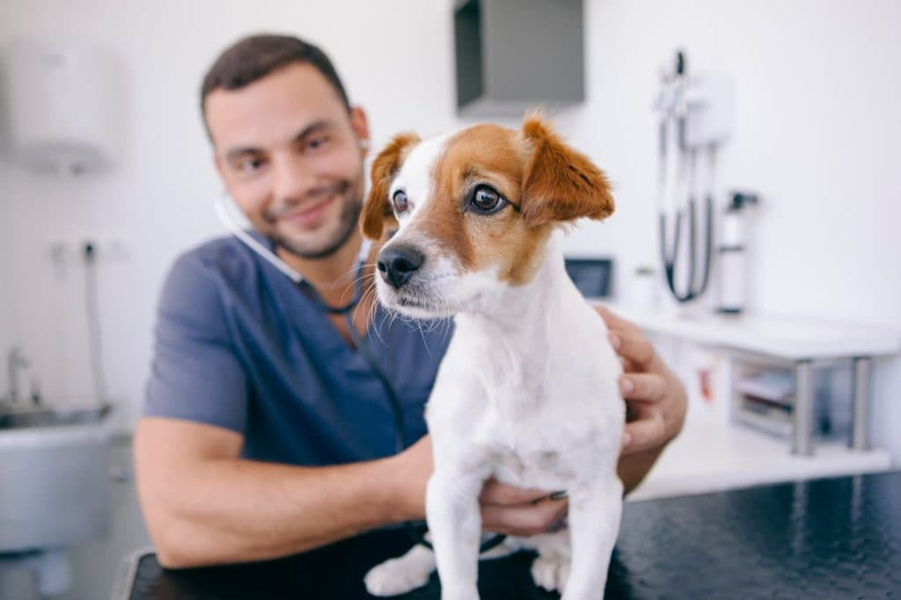
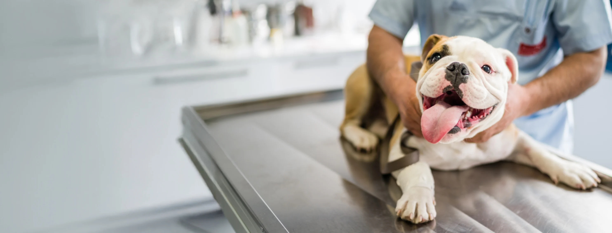

Apahida



Lucrăm atent, explicăm simplu și tratăm responsabil — pentru că animalul tău merită cele mai bune îngrijiri.
Echipa noastră este formată din medici cu experiență, dedicați bunăstării fiecărui pacient. Lucrăm cu răbdare, comunicăm transparent și facem totul ca vizita la veterinar să fie cât mai lipsită de stres.
Fie că e vorba de un consult de rutină, un vaccin sau o urgență, ne bucurăm să fim alături de voi la fiecare pas.


De la controale de rutină și prevenție până la investigații, intervenții și monitorizare post-tratament.
Evaluări complete, prevenție personalizată și recomandări clare pentru viața de zi cu zi.
Rezultate rapide, interpretate corect, pentru decizii medicale sigure și bine argumentate.
Intervenții sigure cu anestezie supravegheată și follow-up postoperator complet.
Medicație, diete veterinare și recomandări practice pentru recuperare acasă.
Detartraj, evaluări dentare și tratamente pentru sănătate orală bună pe termen lung.
Protocoale de imunizare actualizate și documentație europeană pregătită corect.
Aproape un deceniu de îngrijire veterinară de calitate în inima comunității noastre din Apahida.
Fiecare specialist lucrează cu răbdare, atenție clinică și comunicare deschisă.


Peste 200 de recenzii pozitive pe Google. Iată câteva dintre ele.
★★★★★Am ajuns la Profesional Vet cu câinele meu în urgență. Echipa a fost extraordinar de promptă și profesionistă. Max s-a recuperat complet și le mulțumim din suflet!
Andreea M. proprietar labrador · Apahida
★★★★★Cel mai bun cabinet veterinar din zonă. Medicii explică tot pe înțeles, prețurile sunt corecte și animalele sunt tratate cu multă grijă. Recomand cu toată inima!
Cosmin P. proprietar pisică · Cluj-Napoca
★★★★★Atmosfera calmă și medicii răbdători ne-au câștigat complet. Luna nu mai face crize de anxietate la vizitele periodice. Recomandăm tuturor!
Raluca D. proprietar pisică · Florești
Completează formularul și te vom contacta în cel mai scurt timp pentru a stabili o vizită.
| Luni – Vineri | 9:00 – 18:00 |
| Sâmbătă | 9:00 – 14:00 |
| Duminică | Urgențe: 0742 218 295 |